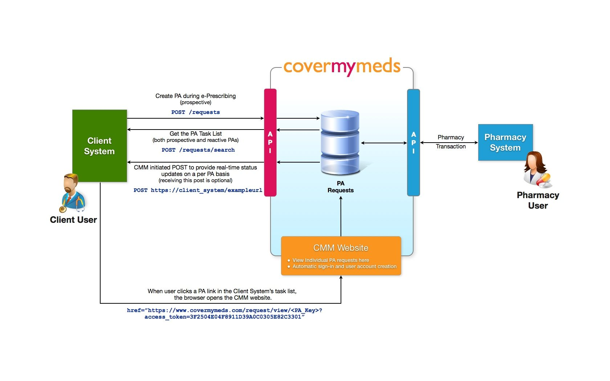
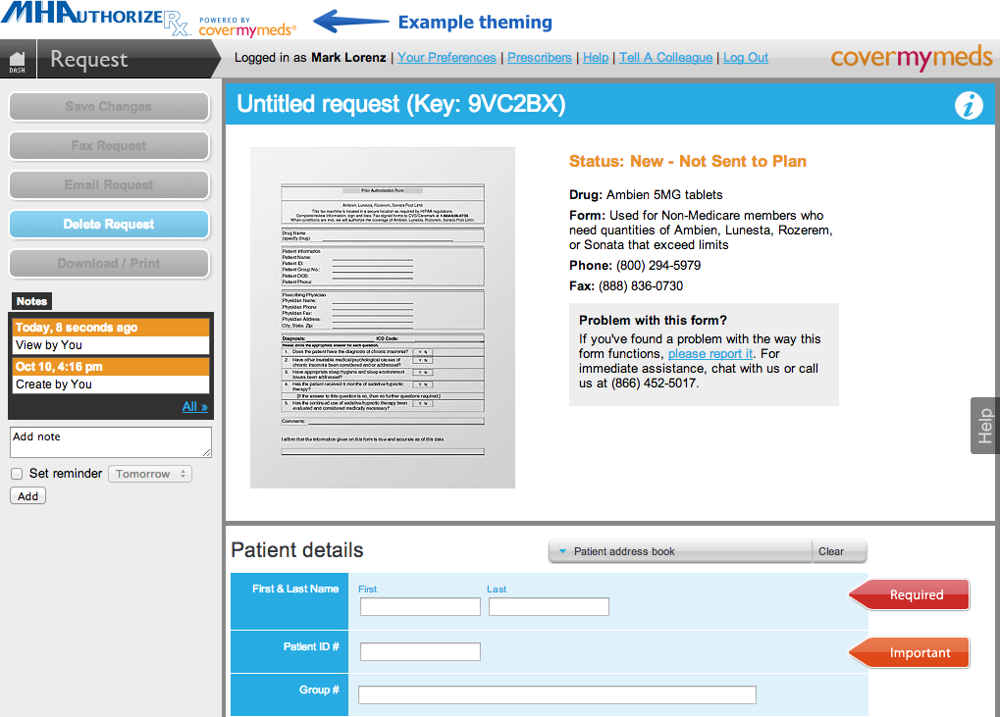

Quick Start
Use the included api_id and api_secret to play around, but get your own soon so that we can contact you if it looks like there is a problem. Sign up for instant access on the developer account page.
Your integration will be a matter of creating prior authorization (PA) requests, saving and using their access tokens, and displaying a task list composed of PAs for your users.
Creating a PA
<form method="post" action="https://api.covermymeds.com/requests"> <label for="first_name">First Name</label> <input id="first_name" name="request[patient][first_name]" placeholder="(required)" type="text"> <label for="last_name">Last Name</label> <input id="last_name" name="request[patient][last_name]" placeholder="(required)" type="text"> <label for="date_of_birth">Date Of Birth</label> <input id="date_of_birth" name="request[patient][date_of_birth]" placeholder="(required)" type="text"> <label for="state">State</label> <input id="state" name="request[state]" placeholder="(required)" type="text"> <label for="drug_id">Drug ID</label> <input id="drug_id" name="request[prescription][drug_id]" value="094563" type="text"> <input type="hidden" name="v" value="1"> <input type="hidden" name="api_id" value='1vd9o4427lyi0ccb2uem'> <input type="submit" value="Submit"> </form>
$(function () { var options = { apiId: '1vd9o4427lyi0ccb2uem', apiSecret: 'q4trxd3rj8w38qfykqn-l9zcmxxlnibzwciof6pu', version: 1, data: { request: { ... } } }; // Assuming there is an HTML element // <button id="create_request">Click me!</button> $('#create_request').createRequest(options); });
import requests # create a PA data = { 'v': '1','api_id': '1vd9o4427lyi0ccb2uem', 'request': {'form_id': '20337', 'state': 'OH', 'patient': {'first_name': 'Matt', 'last_name': 'Smith' , 'date_of_birth': '01/27/1979'}, 'prescription': {'drug_id': '131079'},} } r = requests.post('https://api.covermymeds.com/requests/', headers=headers, data=data) print r.text # retrieve a PA params = { 'v': 1, 'ids': 'VH9VW9' 'api_id': '1vd9o4427lyi0ccb2uem', 'api_secret': 'q4trxd3rj8w38qfykqn' } r = requests.get('http://api.covermymeds.com/requests/', headers=headers, params=params) # show the CMM request page for the PA import webbrowser url = "requests.get('http://www.covermymeds.com/request/:%s?access_token_id=%s'" % ('BK4GC7', 'fevsrg85wcvdo9qtgb2i') webbrowser.open(url) # retrieve many PAs for a task list data = { 'api_id': '1vd9o4427lyi0ccb2uem', 'api_secret': 'q4trxd3rj8w38qfykqn', 'ids': ['VH9VW9', 'NQ2PB6', 'PA2NT8'] } r = requests.post('https://api.covermymeds.com/requests/search/', headers=headers, data=data)
Create a request by POSTing to /requests/. Use the code samples or the interactive documentation for the POST /requests resource.
The response includes an id and an access_token. Save these and use them to retrieve the PA later.
Retrieving a PA
You can GET a PA using the GET /requests/ resource.
Or, you can diplay the PA in the CoverMyMeds system by constructing a URL like this: http://www.covermymeds.com/request/:id?access_token_id=ttookkeenn.
Showing a task list
You can retrieve a json list of prior authorizations by sending multiple ids and access_tokens. You will format this data into a task list in your application. Use the code samples or the interactive documentation for the GET /requests/ resource.
Overview
This API allows companies offering Electronic Health Record (EHR), stand-alone e-prescribing, or Practice Management Systems (“Client Systems”) to offer a very compelling prior authorization solution to their customers. Integrating with the API should be straightforward for both “on-premise” client server applications and browser-based systems. The API uses vanilla web services (REST), and is backed by development libraries that make using it a piece of cake.
Because PA will eventually become a named HIPAA standard, most EHR systems will need to support an electronic PA solution. A few may choose to build this themselves from the raw NCPDP ePA transactions, however this involves an incredible amount of work-our experience over the past five years shows that making ePA worth using in the real world is a monumental task that many will wish to avoid. So that EHR systems can focus on other things, CoverMyMeds' API offers a number of powerful features that you won’t get on your own. After completing this integration, your ePA system will:
- Support the NCPDP ePA standard
- Work for all plans, not just those that support ePA
- Turn PA faxes and phone calls from more than 80% of US pharmacies into a task-list in your system
Workflow
Prior Authorization may be initiated “prospectively” in the doctor’s office, or “reactively” after a claim rejection in the pharmacy. The pharmacy industry generally favors moving toward the prospective use case, ideally at the point of prescribing. However, because the majority of PAs are initiated reactively today, we believe it is important to address both use cases. CoverMyMeds’ Prescriber API allows a clinical system vendor’s product (Client System) to easily support a paperless process for both workflows.

The core workflow concept in the CoverMyMeds API is a “PA Task List” that is populated by both reactive pharmacy (rejected claim) transactions and prospective physician (e-prescribing) transactions.
Integration Components
You will be supporting three user-interface componenents in your EHR:
A checkbox next to each prescription in your e-prescribing “shopping cart.” This allows the prescriber to start a prior authorization when writing a new prescription. Optionally, you should also consider adding a “Start PA” button next to each existing prescription.
A “New PA” form that allows users to start a prior authorization when one was not started durring the e-prescribing process.
A Task List which displays the PAs that were started from the e-prescribing or New PA form, in addition to the PAs that were started in the pharmacy after your prescriber sent a prescription (most pharmacies are also integrated with CoverMyMeds). The actual requests are worked and managed on a “themed” page served by CoverMyMeds after clicking through the Task List.
You will be supporting a few server-side components:
Webserver: You will run a webserver that allows us to POST changes to each existing PA, and to send new PAs that are initiated in integrated pharmacies.
Token Management: You will store ids and access_tokens for each prior authorization. A detailed discussion of access_tokens is available below.
Prescriber Preference: You may choose to register all prescribers using our Prescriber resource, or you may wish to allow prescribers to manage their preference. If you allow self-management, you will need a “checkbox” that indicates that the user is using the CoverMyMeds integration. When checked, you should have a Prescriber resource created at CoverMyMeds. When unchecked, you should delete the Prescriber resource.
Mapping the Workflow to the API
There are two ways a PA is created:
- A Client System initiates a prior authorization with
POST /requests/. - A pharmacy sends data to CoverMyMeds using our Pharmacy API.
Once created, PAs are worked in the Client System through the Task List, which is retrieved through GET /requests/ or POST /requests/search/. This allows the Client System to have full control over which Client Users are allowed to access each PA request. The response data contains a link (with an authentication token) to each request on the CMM website.
The actual PA request is displayed on a page served by CMM. The link to each request page provides a seamless transition through single-sign on mediated by the access_token contained in each link.
Upon each change in status to a prior authorization (e.g., the health plan approves the request), CMM will POST the request data to a callback_url provided at PA creation, or if not provided, to the URL pre-configured for each Client System.
The Client System can also retrieve the latest status at any time for each PA through the GET /requests/ resource, or for multiple requests through the POST /requests/search/ resource. These URLs may be “polled” at a reasonable interval (i.e., hourly) for systems that choose not to provide a callback_url.
Upon each new PA being created in an integrated pharmacy, CoverMyMeds will POST the same response data as in the POST /requests/ resource to your callback_url.
Plans that participate in the ePA process with CoverMyMeds receive electronic PA requests, and provide electronic determinations (approved/denied), sometimes in real-time. Plans that do not participate in the ePA process receive a PA request via fax, on their appropriate drug-specific form. Determinations for non-participating plans are provided directly to the prescriber (outside of the CMM workflow), however approval or denial may be tracked in CMM by the user.
/drugs/
<form method="get" action="https://api.covermymeds.com/drugs"> <label for="drugs_query">Query</label> <input id="drugs_query" name="q" placeholder="(required)" type="text"> <input type="hidden" name="v" value="1"> <input type="hidden" name="api_id" value='1vd9o4427lyi0ccb2uem'> <input type="submit" value="Submit"> </form>
$(function () { var options = { apiId: '1vd9o4427lyi0ccb2uem', apiSecret: 'q4trxd3rj8w38qfykqn-l9zcmxxlnibzwciof6pu', version: 1 }; // Assuming there is an HTML element // <input type="text" id="drug_search"> $('#drug_search').drugSearch(options); });
import requests params = { 'v': 1, 'api_id': '1vd9o4427lyi0ccb2uem', 'q': "Nexium" } r = requests.get('https://api.covermymeds.com/drugs/', params=params)
The GET /drugs/ resource allows you to implement a drug search so the user can pick a drug for their request. When picked, you get our internal drug id. Partial and full drug names are supported-click here for a search for “Nex”.
You can use this resource to implement a “type-ahead” search. We publish a jquery plugin that allows you to do this without any effort at all.
You must specify the request[prescription][drug_id] when a new PA is created through the POST /requests/ resource. Optionally, you may also include quantity and days supply, values which are usually required in the prior authorization submission to the plan.
You may submit CMM’s drug_id value returned from the GET /drugs/ resource, or you may submit an NDC value for this field. Submitting an NDC is really just sugar-we will convert the NDC code you submitted to our internal identifier when we create the request. Most plans will approve requests at the “label name” (drug, strength, form) or an even higher level, so you may pick a “representative” NDC code when submitting your request.
Submitting an NDC code is advantageous when you are initiating the request from the e-prescribing workflow where the user has already “picked” a drug in your system, and you know the NDC code. The /drugs/ resource is a good way to show a type-ahead search, such as you will need in the New PA form, so using CMM’s internal drug_id can be convenient here.
/forms/
<form method="get" action="https://api.covermymeds.com/forms"> <label for="forms_query">Query</label> <input id="forms_query" name="q" placeholder="(required)" type="text"> <label for="forms_drug_id">Drug ID</label> <input id="forms_drug_id" name="drug_id" placeholder="(required)" type="text"> <label for="forms_state">State</label> <input id="forms_state" name="state" placeholder="(required)" type="text"> <input type="hidden" name="v" value="1"> <input type="hidden" name="api_id" value='1vd9o4427lyi0ccb2uem'> <input type="submit" value="Submit"> </form>
$(function () { var options = { apiId: '1vd9o4427lyi0ccb2uem', apiSecret: 'q4trxd3rj8w38qfykqn-l9zcmxxlnibzwciof6pu', version: 1, drugId: 12345, state: 'OH' }; // Assuming there is an HTML element // <input type="text" id="form_search"> $('#form_search').formSearch(options); });
import requests params = { 'v': 1, 'api_id': '1vd9o4427lyi0ccb2uem', 'drug_id': '064691', 'state': 'OH', 'q': "Humana" } r = requests.get('https://api.covermymeds.com/forms/', params=params)
The GET /forms/ resource allows you to implement a form search so the user may pick the appropriate prior authorization “form” for their request. This resource works with both “paper” forms, and electronic prior authorization (ePA) requests.
You can use this resource to implement a “type-ahead” search. We publish a jquery plugin that allows you to do this without any effort at all.
Requests to this resource run our algorithm to determine the appropriate form based on the drug, state, and a text query. The text query is processed against our data for plan names, PBM names, form names, BIN, PCN, Group ID, and CMS Contract IDs. The result is a “scored” list of the most appropriate forms for the request. The top-result is usually the most appropriate for the user to pick.
When you create a new PA through the POST /requests/ resource, you may specify the form_id, as picked by the user. Providing the form_id with the creation of the PA request is optional-if you choose not to include it, the user will be presented with our form search dialogue when they first visit the PA request through their Task List.
As a rule of thumb, it is best to include the form search as part of interactions that are conducted by administrative staff, such as the New PA Form, and to skip the search durring the e-prescribing workflow.
/requests/
The /requests/ resource is the workhorse of the API. You will use it to create new prior authorizations, retrieve information about them, and get a list of them for your Task List. Several additional features are provided for working with prior authorizations such as token management, using the CMM request page, theming, and the callback system.
POST /requests/
<form method="post" action="https://api.covermymeds.com/requests"> <label for="requests_first_name">First Name</label> <input id="requests_first_name" name="request[patient][first_name]" placeholder="(required)" type="text"> <label for="requests_last_name">Last Name</label> <input id="requests_last_name" name="request[patient][last_name]" placeholder="(required)" type="text"> <label for="requests_date_of_birth">Date Of Birth</label> <input id="requests_date_of_birth" name="request[patient][date_of_birth]" placeholder="(required)" type="text"> <label for="requests_state">State</label> <input id="requests_state" name="request[state]" placeholder="(required)" type="text"> <label for="requests_drug_id">Drug ID</label> <input id="requests_drug_id" name="request[prescription][drug_id]" value="094563" type="text"> <input type="hidden" name="v" value="1"> <input type="hidden" name="api_id" value='1vd9o4427lyi0ccb2uem'> <input type="submit" value="Submit"> </form>
Use this method to create a new prior authorizaton request. Because data is being “put into” the system, we require only the api_id so that this request can safely be made from client-side code. The http response will contain a link to the prior authorization and meta-data about the request.
You should consider whether to actually show the request to the user after it is created. It is usually best to show the request page when a PA is created from the New Request Form, since that feature is likely to be used by an administrative staff person who wants to complete the PA in one sitting. However, when the PA is created in the e-prescribing workflow, it can be best to simply let the user know that the PA was created and let it be worked later by an administrative task person from the Task List. The sample implementation we provide uses a nice approach in that the confirmation message allows the prescriber to click to view the PA, but doesn’t otherwise interupt the prescribing workflow.
GET /requests/
<form method="get" action="https://api.covermymeds.com/requests"> <label for="get_requests_id_1">Pa ID</label> <input id="get_requests_id_1" name="ids[]" placeholder="(required)" type="text"> <input type="hidden" name="v" value="1"> <input type="hidden" name="api_id" value='1vd9o4427lyi0ccb2uem'> <input type="hidden" name="api_secret" value='q4trxd3rj8w38qfykqn-l9zcmxxlnibzwciof6pu'> <input type="submit" value="Submit"> </form>
import requests # GET /requests/ data = { 'v': '1', 'api_id': 'o24ytjne4dbqyipwceso', 'api_secret': 'o24ytjne4dbqyipwceso', 'id': 'VH9VW9', } r = requests.get('https://api.covermymeds.com/requests/', data=data) print r.text
Use this method to retrieve information about a PA that already exists. Because this method requires the api_secret, it should be made from your server. If you wish to display the PA to the user, you should display it on the CMM website as described below.
POST /requests/search/
<form method="post" action="https://api.covermymeds.com/requests/search/"> <label for="post_requests_id_1">Pa ID</label> <input id="post_requests_id_1" name="ids[]" placeholder="(required)" type="text"> <input type="hidden" name="v" value="1"> <input type="hidden" name="api_id" value='1vd9o4427lyi0ccb2uem'> <input type="hidden" name="api_secret" value='q4trxd3rj8w38qfykqn-l9zcmxxlnibzwciof6pu'> <input type="submit" value="Submit"> </form>
$(function () { var options = { apiId: '1vd9o4427lyi0ccb2uem', apiSecret: 'q4trxd3rj8w38qfykqn-l9zcmxxlnibzwciof6pu', version: 1, ids: ['AB1CD2', 'BA3DC4'] }; // Assuming there is an HTML element // <div id="dashboard"></div> $('#dashboard').dashboard(options); });
import requests # POST /requests/search/ data = { 'v': '1', 'api_id': 'o24ytjne4dbqyipwceso', 'api_secret': 'o24ytjne4dbqyipwceso', 'ids': ['VH9VW9', 'NQ2PB6', 'PA2NT8'] }} r = requests.post('https://api.covermymeds.com/requests/search/', data=data) print r.text
Use this method to return a list of prior authorizations to populate your Task List. This resource may be used client-side or server-side since it uses access_tokens.
Because this data is light-weight, we do not need to support filtering or pagination in the resource itself. If you are implementing your own Task List, it is important to provide search and filtering from your client applicaton. Our Task List javascript component can handle this for you.
POST /requests/tokens/
<form method="post" action="https://api.covermymeds.com/requests/tokens/"> <label for="token_id_1">Pa ID</label> <input id="token_id_1" name="request_ids[]" placeholder="(required)" type="text"> <input type="hidden" name="v" value="1"> <input type="hidden" name="api_id" value='1vd9o4427lyi0ccb2uem'> <input type="hidden" name="api_secret" value='q4trxd3rj8w38qfykqn-l9zcmxxlnibzwciof6pu'> <input type="submit" value="Submit"> </form>
import requests # POST /requests/tokens/ data = { 'v': '1', 'api_id': 'o24ytjne4dbqyipwceso', 'api_secret': 'o24ytjne4dbqyipwceso', 'request_ids': ['VH9VW9', 'NQ2PB6', 'PA2NT8'] }} r = requests.post('https://api.covermymeds.com/requests/tokens/', data=data) print r.text
Use this resource to create new access_tokens for a PA request. You may wish to do this so that you can assign a unique token for each user that will view a request, or to regenerate tokens if you believe they may have been compromised.
DELETE /requests/tokens/{id}/
<form method="post" action="https://api.covermymeds.com/requests/tokens/" id="delete_token"> <label for="delete_token_id">Token ID</label> <input id="delete_token_id" name="id" placeholder="(required)" type="text"> <input type="hidden" name="v" value="1"> <input type="hidden" name="api_id" value='1vd9o4427lyi0ccb2uem'> <input type="hidden" name="api_secret" value='q4trxd3rj8w38qfykqn-l9zcmxxlnibzwciof6pu'> <!-- This tells our server that we actually want this request to be DELETE rather than POST --> <input type="hidden" name="_method" value="delete"> <input type="submit" value="Submit"> </form> <script> // The API URL requires a token ID to be part of it, which is problematic because // the ID is a user-provided value. This Javascript dynamically appends the token ID // value to the form URL when the form is submitted. (function () { document.getElementById('delete_token').addEventListener('submit', function (event) { var form = event.target; // Append the token ID to the API URL form.action += document.getElementById('delete_token_id').value; }, true); }()); </script>
import requests # DELETE /requests/tokens/{id} data = { 'v': '1', 'api_id': 'o24ytjne4dbqyipwceso', 'api_secret': 'o24ytjne4dbqyipwceso', 'id': ['44e9zpyuouszdj9ptp6x', 'fevsrg85wcvdo9qtgb2i'] }} r = requests.delete('https://api.covermymeds.com/requests/tokens/', data=data) print r.text
Use this resource to delete access_tokens for a PA request. You may wish to do this if a user that has previously seen a request should no longer have access to it. A PA request is effectively deleted for your users when you remove all of the access_tokens to which it is associated.
Displaying a PA on the CMM site
import webbrowser # open browser to CMM request page url = "requests.get('http://www.covermymeds.com/request/:%s?access_token_id=%s'" % ('BK4GC7', 'fevsrg85wcvdo9qtgb2i') webbrowser.open(url)
Supporting a great user experience across thousands of health plan’s distinct prior authorizaton forms, standards-based ePA transactions, and proprietary integrations presents many user interface challenges.
To solve this problem, it is best to let CoverMyMeds serve the actual prior authorization request page from our server. The request page formats the PA for editing and provides a number of decision support and workflow tools. We encourage you to “theme” the page for your Client System. Details on how to do this are included in the Theming section.

Clicking an item in your Task List should direct the user to the CMM request page. The link to each request page provides a seamless transition through single-sign on mediated by the access_token contained in each link.
You format a link like this:
http://www.covermymeds.com/request/:id?access_token_id={access_token}
You can click here to see an actual real link.
Callbacks
# partial implementation of app to receive callbacks from CMM @app.route('/callbacks/', methods=['POST']) def process(): payload = request.form.get('request') pa = PA(payload) # validate the request and store it if pa.validate(): pa.save() return jsonify({'messsage': 'Success!'}), 201 else: return jsonify({'message': 'Failure!'}), 400
It is essential that your Task List contain the latest status information for each PA, and that you update it with new PAs that were created in the pharmacy.
You may do this by requesting GET /requests/ each time a user views a Task List, or you may implement an endpoint to which we may send data each time there is a change (e.g., the health plan approves the request). CMM will format this request identically to the JSON response in the GET /requests/ resource.
If you implement an endpoint, you can specify a global callback_url in your Developer Dashboard, or you may submit a callback_url for each request when creating them through POST /requests/. Setting this value on a per-PA basis allows you to distribute the callbacks to multiple on-premise systems or to different servers if you are load-balancing a multi-tenant architecture.
Your webservice should return an http status 200 or 201 when you receive the request and process it successfully. You should return an http error code when the request cannot be processed. CoverMyMeds’s system will queue errors and retry them if the status codes are believed to be resolvable. We will contact you if they are not successfully processed within a reasonable timeframe.
To enhance security, you may whitelist our ip address range, and we can send an http auth header using a username and password you supply. Because your system should not “give out” information, these security measures are prudent to avoid the possibility of malfeasance, but not strictly required.
Theming
You may specify the theming that is used on the CMM request page. This theming is controlled by a global setting that is configured in your Developer Dashboard or on a per-PA basis by submitting the theme parameter in the link you construct to the CMM request page.
@TODO
/prescribers/
A Prescriber resource allows us to share a PA that is initiated in the pharmacy with your user.
Most pharmacies use the CoverMyMeds system to initiate a PA after each claim rejection. CoverMyMeds pushes these prior authorizations to the right place based on a credentialing process that maps prescriber NPIs to integrated EHRs or CoverMyMeds user accounts.
Doing this push involves mapping the Prescriber NPI field in the rejected claim to a flag that tells the CoverMyMeds system that claim rejections for the given Prescriber NPI should be available in your system.
Upon a PA being initiated by a pharmacy, CoverMyMeds will deliver the transaction by POSTing to your server.
For each pharmacy-initiated PA, CoverMyMeds POSTs data formatted identically to the response in the POST /requests transaction. CoverMyMeds expects a 2xx (“ok”) http response; if we receive an error, we will queue the delivery and try again later.
Upon delivery, you should store the PA data, including the id, access_token, and prescriber_npi.
Then, when you show the task list to the user, the pharmacy-initiated transactions are requested by id and access_token just as prescriber-initiated transactions are shown.
Managing Prescriber Credentials
The /prescriber/ resource allows you to create, read, update and delete records in our system that map NPI numbers to delivery URLs. To support on-premise or distributed/load-balanced systems, you may specify a different URL for each prescriber-credential. If the delivery URL is unspecified, CoverMyMeds will POST transactions to a URL that may be pre-configured globally.
Not all actions are instantaneous-after creating or updating a prescriber credential, CoverMyMeds runs a security process to validate the credential request. Some manual steps may be taken, including contacting the user, such as in the common occurence that you are registering an NPI for a user that already exists in CoverMyMeds. These manual processes are usually complete in less than 24 hours.
Your system is responsible for maintaining a map of credentialed NPIs to your users, and in turn, your users to PA data that we POST to you.
Upon a new prescriber-credential request, CoverMyMeds will contact the associated prescriber using our contact data and will confirm that they wish to have data delivered to your Client System.
Authentication
Registration
Visit the Developer Dashboard page to register and manage your preferences.
When you register your Client System, you will be issued an api_id and an api_secret.
You may also specify a callback_url which will be used to receive PA updates and new PAs. The use of this url is optional.
API Keys
Authentication for the API is performed with your api_id. If the resource could be destructive or reveal private information, the api_secret or “per-PA” access_tokens are used in addition to the api_id.
access_tokens are used to provide single-sign-on (SSO) for the Request page that is served by CMM.
The api_secret and access_tokens are effectively a type of password. Because the api_secret is used across your integration, it should never be exposed to your user. Exposing an access_token is less problematic because it is used for only one request-which by definition your user already has seen. The section below includes more information on handling access_tokens.
You can and should change your api_secret any time you suspect it may have been compromised. Doing this will take immediate effect and can be done in the Developer Dashboard.
Access Tokens
Most systems have the concept of a user. This user concept is frequently extended to include constructs such as user groups, organizations, and perhaps also practice locations, which may have composite properties of groups and organizations while adding another dimension.
Together, these concepts are used to provision access to database records, such as patients. The relationship between database records and users may be relatively simple, such as a foreign key in the record that points to a user. Or, it may be more complex, perhaps managing a many-to-many relationship that includes the user group and other hierarchies. Additional complexity is involved when one considers how user-level changes should modify record access over time. For example, if a new user is added to a record that was previously created, should this user now have access to the record?
You already know how to do all of this stuff-so we have designed the API to avoid compromising your carefully designed access controls. We do this by skipping the user concept entirely–instead, we use access_tokens that grant access to the associated prior authorization to anyone in their possession.
An initial access_token is created with each new PA through the POST /requests/ resource. The Client System may create new access_tokens and may destroy existing access tokens through the /requests/tokens/ resource. Each PA may have zero or more access tokens at any one time. If a PA does not have any access tokens, it innaccesible through the API and through the CoverMyMeds website-it is effectively deleted. To undelete this PA, a new access_token may be created.
Storing Access Tokens
Access tokens should be stored by the Client System such that they can be used appropriately for any given user context. To take a simple example, imagine that your system has a single user access control scheme. The token management associated with this scheme would be easy-just keep a list of tokens with each user (perhaps all of the system-wide tokens in one table with a foreign key to the user).
Your system will probably be a bit more complicated than that. You’ll probably want to provide access so that nursing and administative staff can see prior authorizations for their doctors, and everyone can see the work in their workgroup. Remember to think about the three ways that prior authorizations may be created:
- By practice office staff, using the New PA Form
- By the prescriber, in the e-prescribing workflow
- By the pharmacy, associated with a prescriber NPI
The first two usage scenarios involve a user directly. The last usage scenario involves a prescriber that is associated with one or more users. For the first scenario, access tokens should be stored so that they may be retrieved by the other users that share work with the creating user. In the second and third scenario, access tokens should be stored so that they may be retrieved by all users that have access to the prescriber’s data.
Using Access Tokens
So that you may use client-side code to perform the integration, the /requests/ resource does not require the use of the api_secret.
This means that access tokens are effectively passwords. Their security comes from being hard to guess (they are long random strings), and from not revealing them to users that shouldn’t be able to see their associated PA.
Each access token is unique for each request (i.e., they aren’t re-used)-this makes their use lower risk than typical password-based authentication systems-which could provide access to large volumes of protected health information if they are compromised.
You may choose to actively manage access_tokens. This is unneccessary unless the tokens are compromised, but you may wish to consider it if you are using tokens in a client-side application. For example, you could regenerate tokens for a particular request if a user of the system shouldn’t have access to the PA request anymore. While low risk, it would be possible that this user had previously recorded the access_token.
Handling Errors
{"errors":[{"code":401001,"message":"Unauthenticated: Please provide your api_id.","debug":"An api_id is required, but no api_secret is required for this action."}]}
It is important that your application handle errors responsibly. This generally means not failing silently, logging problems in your system, and showing good error messages to users.
To make this as easy as possible, we use real HTTP error codes, and return a JSON object for each error, shown in the code samples on the right. One or more errors may be returned. Each message should be displayed to the user, whereas debug information is for your developers.
It is possible, particularly when you are first starting your integration, that a request made to our server will be so far from what is expected that our error message isn’t useful, or that you receive frequent 500 (Internal Server Errors). Please contact us and we will set up a live session with one of our developers to watch your requests and help sort these problems out quickly.
| Error Code | Meaning |
|---|---|
| 400 | Bad Request |
| 401 | Unauthorized – The api_id and/or api_secret is missing or incorrect. See debug info in error message. |
| 404 | Not Found – The requested resource does not exist, or your request was missing required fields. |
| 405 | Method Not Allowed – You tried to access a resource with an unsupported method. |
| 500 | Internal Server Error – We had a problem processing your request. This may be a problem on our server, or it may be a badly formatted or incorrect request that we couldn’t process. Please contact us for help resolving this issue. |
| 503 | Service Unavailable – We’re temporarially offline for maintanance. Please try again later. |
System Status
{"now":"1390452622","status":"ok","app_name":"requests_api","version":"212aad2822869ff4fb88fac137224da991d485bb","database":"true"}
We are fanatical about keeping our systems running, and you can expect API uptime to match or exceed the best “write-heavy” internet services (e.g., Gmail, Office 360, Salesforce, but not quite as high as Google Search). This means somewhere between three and four nines of availability.
Dashboard and Programmatic Monitoring
To promote transparency, we publish an Uptime Dashboard which shows realtime status information and historical uptime data.
You may also programatically monitor each API resource by using its /_ping/ route. Should you wish to do this, the most important resource to monitor is https://api.covermymeds.com/requests/_ping. A status of ok indicates that systems are up. Anything else indicates a possible problem.
Links
- Sign up for a CMM account to see how our original website works
- Register your Client System or manage your Developer Account
- javascript API client plugins
- EHR demo app that uses the javascript components
- Supported Browsers
Getting Help
CoverMyMeds provides complete technical assistance during the integration. Questions may be sent to developers@covermymeds.com until a regular contact is assigned.
When the integration is nearing completion, we’ll assign an Account Manager to make sure you and your customers have direct access to our operations staff. Your Account Manager will provide:
- Training for your staff and customers
- Exceptional help and marketing materials
- Promotional support for your system
HIPAA and Security
Overview
CoverMyMeds deploys a set of Policies and Procedures, together with Technical, Physical, and Administrative Safeguards to maintain compliance with the HIPAA Privacy Rule, Security Rule, Transactions and Code Sets Rule, and their implementing regulations.
For our users who are Covered Entities (e.g., providers, plans, or PBMs), CoverMyMeds functions as a Business Associate. In some situations, we may also function as a Health Care Clearinghouse (a type of Covered Entity). For example, we meet his definition when health care providers use a system that integrates with us, such as using this API, or when we communicate with the plan or PBM using the ePA standard.
CoverMyMeds also publishes a Privacy Policy and Terms of Service. These materials may be found in our online Privacy Center.
Because our service is used as part of a health care provider’s Treatment and Operations functions, and because we do not sell data or otherwise invoke the requirements, we are not generally required to obtain Patient Authorization or Consent.
Business Associate Agreement
CoverMyMeds uses a standard Business Associate Agreement with most providers, and may execute customized Business Associate Agreements with large health systems, pharmacies, and plans or PBMs (payers).
Integrating Systems will execute a Mutual Subcontract Business Associate Agreement with CoverMyMeds. This document obligates both parties to terms of the Business Associate Agreement, and allows data to be exchanged between the parties.
You may begin your integration without the final execution of the Mutual Subcontract Business Associate Agreement, but this agreement should be in place before any actual PHI is exchanged. In the interim, it is acceptable to use “mock” test data.
Controls and Security Assessments
Security and privacy compliance is a cornerstone of our business. We maintain an active internal program, and employ professional 3rd party auditors to evaluate our effectiveness.
Our programs have also been evaluated and assessed by many of the largest hospital systems, pharmacy chains, health plans and PBMs in the industry. We welcome our Client System partners to conduct their own assessment, including security audits, onsite site reviews, and other measures.
privacymatters@covermymeds.com
1-866-452-5017
CoverMyMeds 130 East Chestnut Street Columbus, Ohio 43215